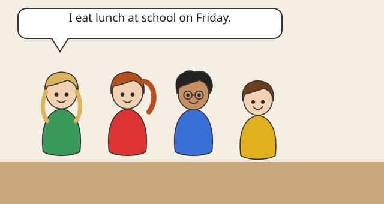
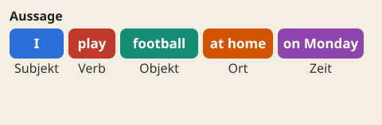

Wer tut was, wo und wann?
Mit einem KI-Tutor lernen
Ein KI-Tutor erklärt dir diese Seite und hilft dir bei den Aufgaben. Wähl deinen Assistenten:
Mit Claude öffnen Mit ChatGPT öffnen Mit Mistral Vibe öffnen
Du nutzt dein eigenes Konto beim Anbieter. Der Assistent ist kein Angebot von lernapps.net: lernapps liefert nur Inhalte und Aufgaben. Die Wahl gilt für alle Seiten, nur auf diesem Gerät.
Sophie erzählt von Montag

Von links: Sophie (Zöpfe) spricht, daneben Ellie (roter Pferdeschwanz), Amir (Brille) und Peter (gelbe Jacke).
Quelle: eigene Zeichnung. Lizenz: CC-BY-4.0.Sophie sagt, was sie am Freitag in der Schule isst: „I eat lunch at school on Friday.“
Aufgabe
Lösung
I play football at home on Monday. richtige Antwort
So lautet der Satz. Zuerst kommt, wer etwas tut, dann was er tut, dann was oder wen, dann wo und wann.
I football play at home on Monday.
Das Verb play muss direkt hinter I stehen. Football kommt erst danach.
I play on Monday football at home.
Die Wörter sind richtig, aber die Reihenfolge nicht. Football gehört direkt hinter das Verb.
Im Englischen hat jeder Teil des Satzes seinen festen Platz.
Das kannst du danach: Du baust englische Aussagesätze in der richtigen Reihenfolge und stellst den Ort vor die Zeit.
Die Satzleiste mit den fünf Karten
Mr Hill hängt eine Satzleiste an die Wand. Auf ihr liegen Satzkarten, jede mit einer eigenen Farbe. Das Subjekt (blau) sagt, wer etwas tut. Das Verb (rot) sagt, was er tut. Das Objekt (grün) sagt, was oder wen. Der Ort (orange) sagt, wo, und die Zeit (violett) sagt, wann. Die Farben gehören zu den Karten, nicht zu den Kindern.

Ein Aussagesatz in einer Reihe. Der Ort (at home) liegt vor der Zeit (on Monday).
Quelle: eigene Zeichnung. Lizenz: CC-BY-4.0.| Karte | Frage | Beispiel |
|---|---|---|
| Subjekt | Wer? | Sophie |
| Verb | Was tut sie? | studies |
| Objekt | Was? | English |
| Ort | Wo? | at home |
| Zeit | Wann? | on Monday |
Merke
Subjekt, Verb, Objekt, Ort, Zeit. Sophie studies English at home on Monday. Der Ort steht vor der Zeit. Im Deutschen darfst du die Wörter oft umstellen, im Englischen ist die Reihenfolge fester. Bei he, she und it hängt ein s am Verb: plays.
| Englisch | Deutsch |
|---|---|
| play | spielen |
| eat | essen |
| watch | anschauen |
| read | lesen |
| teach | unterrichten |
| study | lernen |
| English | Englisch |
| football | Fußball |
| pizza | Pizza |
| lunch | Mittagessen |
| a book | ein Buch |
| a film | ein Film |
| in the park | im Park |
| at home | zu Hause |
| at school | in der Schule |
| in the classroom | im Klassenzimmer |
| on Monday | am Montag |
| on Friday | am Freitag |
| on Saturday | am Samstag |
| on Sunday | am Sonntag |
| every day | jeden Tag |
Übung
Aufgabe
Lösung
Richtige Antwort: 1. Amir, 2. plays, 3. football, 4. in the park, 5. on Saturday
Subjekt, Verb, Objekt, Ort, Zeit: Der Ort steht vor der Zeit.
Aufgabe
Lösung
Richtige Antwort: Sophie – Subjekt; watches – Verb; a film – Objekt; at home – Ort; on Sunday – Zeit
Jeder Satzteil hat eine Karte. Wer etwas tut, ist das Subjekt. Wann es geschieht, ist die Zeit.
Aufgabe
Die Karten liegen durcheinander. Schreibe den ganzen Satz in der richtigen Reihenfolge.
Tipp
Beginne mit dem Subjekt, dann das Verb, das Objekt, den Ort und zuletzt die Zeit.
- pizza · Ellie · eats · at home · on Sunday
- a book · Mr Hill · reads · in the classroom · on Friday
- lunch · Peter · eats · at school · every day
Lösung
- Ellie eats pizza at home on Sunday.
- Mr Hill reads a book in the classroom on Friday.
- Peter eats lunch at school every day.
Aufgabe
In jedem Satz stehen die Karten falsch. Schreibe den Satz richtig.
Tipp
Lege die Satzleiste im Kopf, Karte für Karte.
- I play football on Saturday in the park.
- Sophie a film watches at home.
Lösung
- I play football in the park on Saturday.
- Sophie watches a film at home.
Aufgabe
Schreibe den Satz auf Englisch.
Tipp
Frage dich der Reihe nach: Wer tut was, wo und wann?
- Peter spielt am Samstag im Park Fußball.
- Ellie isst jeden Tag in der Schule Pizza.
- Amir schaut am Sonntag zu Hause einen Film an.
Lösung
- Peter plays football in the park on Saturday. (auch richtig: On Saturday Peter plays football in the park.)
- Ellie eats pizza at school every day.
- Amir watches a film at home on Sunday.
Aufgabe
Hör zu und schreibe, was du hörst.
- KI
- KI
- KI
Lösung
- Ellie plays football at school on Friday.
- Peter eats pizza in the park on Sunday.
- Amir reads a book at home every day.
Ein Satz für die Satzleiste
Aufgabe
Hör zu, sprich nach und nimm dich auf. Vergleiche dann mit dem Original.
Tipp
Hör den Satz zuerst. Sprich dann langsam nach und lege dabei im Kopf die Karten.
- Sophie reads a book at home on Monday.KI
- Mr Hill teaches English at school every day.KI
- Ellie and Peter play football in the park.KI
Zum Aufnehmen braucht diese Aufgabe JavaScript. Die Beispiele kannst du auch ohne anhören.
Lösung
- Sophie reads a book at home on Monday.
- Mr Hill teaches English at school every day.
- Ellie and Peter play football in the park.
Offene Aufgabe
Mr Hill hängt die Sätze der Klasse an die Wand. Schreibe zwei Sätze über Sophie, Ellie, Peter oder Amir. In jedem Satz soll stehen, wer was tut, wo und wann.
Eine gute Antwort enthält:
Lösung
Sophie plays football in the park on Saturday. Peter eats pizza at home on Sunday.
Wie es weitergeht
Die Sätze der Klasse hängen an der Satzleiste. Mr Hill ruft: „Stand up!“ Dieser Satz hat nur eine Karte, das Verb. Wo ist das Subjekt geblieben? Das erfährst du auf der nächsten Seite.
Fehler gefunden oder eine Idee für diese App?